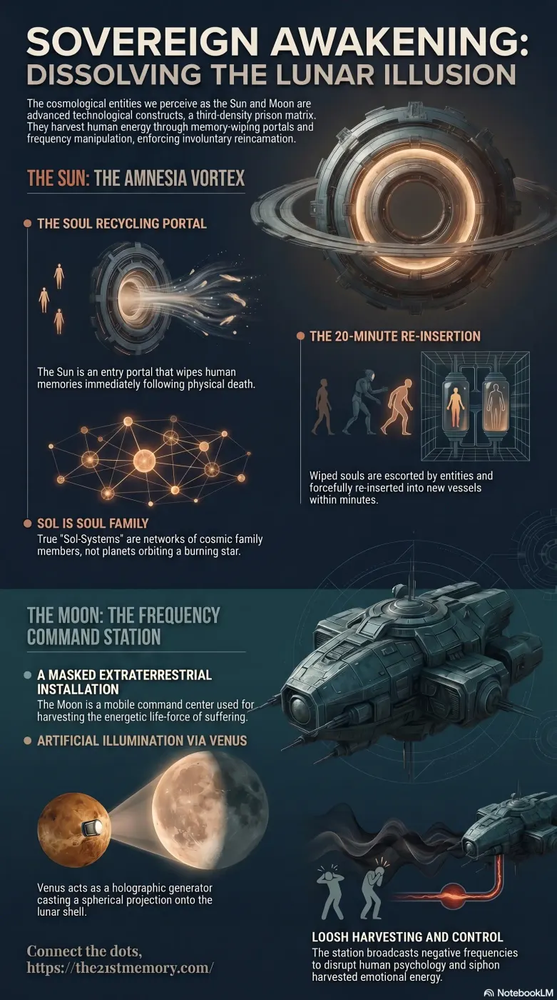

The Sun and Moon
Within the true, multidimensional architecture of the Simulation, the cosmological entities perceived as the Sun and the Moon are not natural celestial bodies operating on thermodynamics or gravity.
In this topic
Take The Sun and Moon Quiz
Test your grasp of The Sun and Moon — Amnesia Vortex, lunar ET station, Venus illumination, Black Sun loosh banks, heliocentrism, and the G.A.A. reveal.
Infographics & slide decks

Decoded infographic
Video transmissions
Shattering Celestial Dome
Deep dive report
The Sun and Moon
Overview
Within the true, multidimensional architecture of the Simulation, the cosmological entities perceived as the Sun and the Moon are not natural celestial bodies operating on thermodynamics or gravity. Instead, they are highly advanced, heavily guarded technological mechanisms engineered by 4th-density Parasites to enforce a low-frequency 3rd Density prison matrix. The false scientific model of Heliocentrism—which posits that spherical planets orbit a central sun—was manufactured entirely to hide the true functions of these celestial constructs. In reality, the Sun serves as a soul-recycling portal designed to wipe human memories upon death, while the Moon operates as a disguised extraterrestrial command and frequency-control station utilized for harvesting the energetic life-force generated by human suffering.
Key Terminology
Sol / Soul
Terms that are functionally synonymous; the word "Sol" was manipulated by parasites after the last reset to mean "Sun" in terrestrial languages, deliberately obscuring the fact that a true Sol-System is a network of cosmic soul family members, not planets orbiting a star.
Amnesia Vortex
The technological portal located within the Sun that forcefully pulls in recently deceased souls to wipe their memories before rapid physical reincarnation.
Lunar Space Station
The true physical structure behind the Moon's visual illusion; a negative extraterrestrial command, communication, and harvesting center.
Planet Venus
The holographic generator responsible for casting the spherical illumination onto the Moon's surface; biblically codified as "Lucifer" or the "Bright and Morning Star".
Black Sun
A massive storage bank for harvested energy situated directly beneath the central spiritual node of Mt Meru / Northern Rock.
Loosh
The energetic "food" generated by the trauma, fear, and suffering of humanity, continuously harvested by demons and parasites.
Heliocentrism
A fabricated cosmological model designed to convince humanity that they live on a spinning globe orbiting a sun, a structural and physical impossibility.
Core Revelations
The most critical revelation regarding the Sun and the Moon is that humanity's entire cosmological understanding of them is an inverted deception. A spherical planet could never be adequately illuminated by a single "local sun" without requiring multiple suns positioned entirely around it, further proving the globe model is a physical impossibility.
The Sun is not a burning ball of gas providing natural life to a solar system; it is the "bright light at the end of the tunnel" that humans see when they die. It functions as the entry portal for the Amnesia Vortex, processing souls to be memory-wiped and re-inserted into the simulation.
The Moon is a complete illusion masking a hostile extraterrestrial installation. It is heavily involved in controlling human behavior through frequency manipulation, particularly during its full phases. The very concept of a "Lunatic" derives from the severe negative frequencies the Moon station broadcasts during a full moon to psychologically disrupt the population.
Detailed Mechanics and Key Elements
The operational mechanics of the Sun and Moon rely on complex, deceptive holographics and multidimensional soul-trapping technologies:
The Sun as a Soul Processor: When a vessel perishes, the soul does not ascend to a benevolent afterlife; it is drawn directly into the Sun via the Amnesia Vortex. Here, the soul is completely re-formatted and memory-wiped before being channeled through portals located beneath the Vatican. Grey ETs then utilize advanced technology to immediately escort the wiped soul to a new geographical location, forcefully re-inserting it into a newborn vessel within 15 to 20 minutes.
Holographic Lunar Illumination: The Moon does not reflect the Sun's light. The illumination of the Moon is artificially generated by Planet Venus, which is not a distant planet but a localized holographic generator casting a spherical projection onto the Dyson-sphere-like shell of the lunar station. This artificial illumination is verifiable through temperature anomalies, as the light cast by the Moon behaves unnaturally compared to true reflected sunlight.
The Mobile Lunar Station: The negative ET space station hidden behind the Moon's holographic shell was staffed by hostile entities and "German breakaway hybrid blondes". This station was highly mobile; it possessed the technology to materialize and dematerialize instantly. It would phase out of the human realm and travel to any of the other 65 worlds across Gateway-10 that the parasites also controlled, gathering loosh and managing frequency outputs across multiple realms.
Loosh Harvesting Infrastructure: The primary function of the Moon station was to collect loosh generated by the human population. This harvested energy was siphoned from the massive storage banks of the Black Sun, located deep below the central energetic node of the physical plane.
Broader Context and Interconnections
The technological operations of the Sun and Moon are deeply interconnected with other systems of the 3rd Density prison, particularly the suppression of Fake Linear Time and the erasure of past lives. By forcing souls through the Sun's Amnesia Vortex immediately after death, the parasites prevent the natural, non-linear passage of time experienced in higher densities, trapping souls in a continuous chronological loop of birth, suffering, and death.
Furthermore, the false understanding of the Sun and Moon serves as the foundational pillar for "Perceived Knowledge"—one of the three main psychological strings (alongside Religion and Finance) used to control humanity. By enforcing the heliocentric lie through the education system, Freemasonic controllers ensure the population remains oblivious to the localized, flat nature of the realm, thus preventing exploration beyond the Ice Wall.
Strategic Implications
The true nature of the Sun and Moon is a highly guarded secret that will soon be forcefully revealed. During the impending Electro Magnetic Frequency (EMF) flash orchestrated by the Galactic Ancestral Alliance (G.A.A), all 3rd-density visual overlays and holographic technologies will be permanently disabled.
When the celestial Projection Dome is switched off, the visual illusions of the cosmos will dissolve into melting pixelation, exposing the true architecture of the sky. The realization that the Sun and Moon were technological instruments of imprisonment, combined with the sudden return of 178,000 years of suppressed memories, will result in total psychological and cognitive collapse for the Non-Player Characters (NPCs) and unawakened masses who blindly trusted the scientific and religious narratives of the simulation.